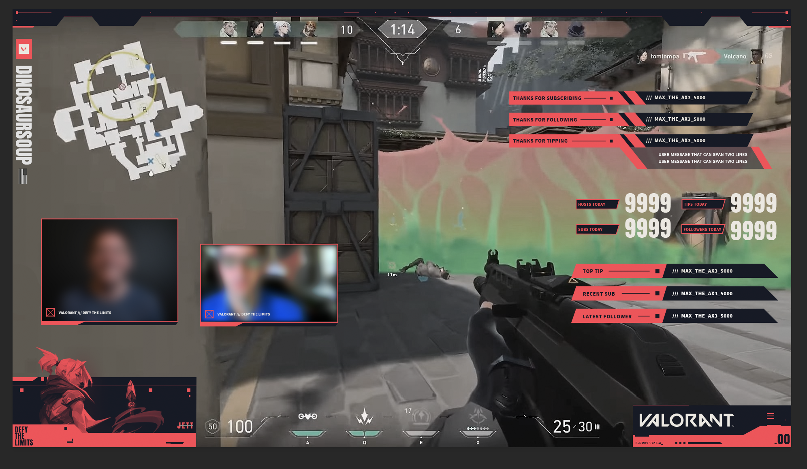
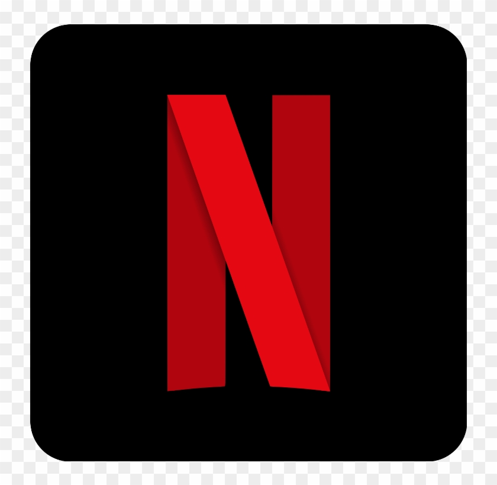
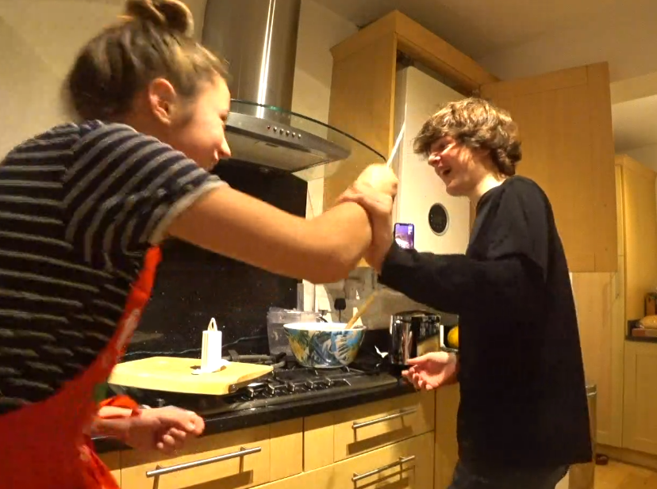

Definition
What are the dIffirent types of Contents and its popularity in Streaming
Types Of Streaming
- Games - Streaming is big business on game platforms such as Twitch, so how do you start? Five experts reveal the knowledge, the kit and the attitude gamers need to find their audience
- Movies - Share All sharing options for: Twitch now lets anyone host an online movie party with the Amazon Prime Video library. Twitch's Watch Parties function is rolling out to everyone today, giving streamers and their subscribers around the world the ability to watch Amazon's library of movies and TV shows together.
- TV shows - The proper examples of this is in facebook live, youtube live and Twitch
- Cooking streams -Steaming is a method of cooking using steam. This is often done with a food steamer, a kitchen appliance made specifically to cook food with steam, but food can also be steamed in a wok. ... Steaming is considered a healthy cooking technique that can be used for many kinds of foods.
Example for Gaming streams

Example For Movie Streaming

Example for Tv-shows streams
Example for Cooking streams
